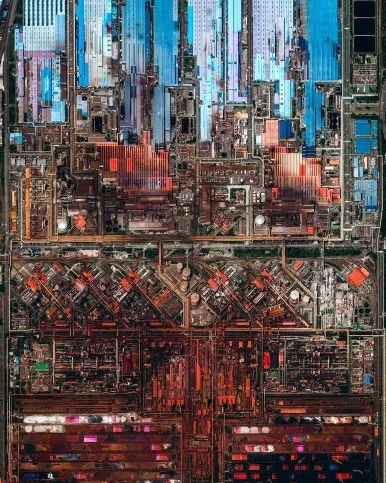
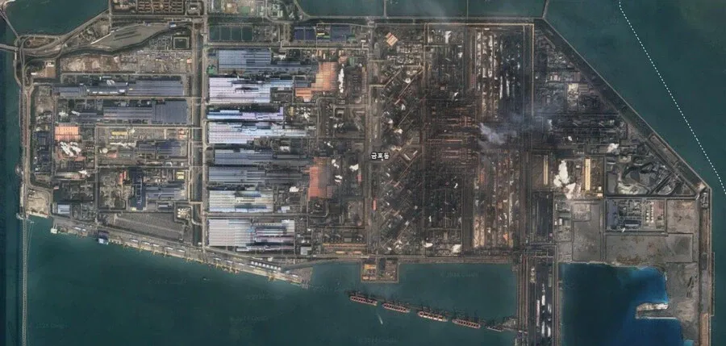

광양제철소의 위성사진이다.
아프리카나 제3세계의 지도부가 경제성장 모델로 삼기 위해 한국에 와서
광양 제철소를 견학하는데
자신들이 생각했던 공장,제철소와는 다르게
상상을 초월하는 규모를 보고
크게 좌절한다고 한다.


광양제철소의 위성사진이다.
아프리카나 제3세계의 지도부가 경제성장 모델로 삼기 위해 한국에 와서
광양 제철소를 견학하는데
자신들이 생각했던 공장,제철소와는 다르게
상상을 초월하는 규모를 보고
크게 좌절한다고 한다.
현대중공업 견학코스 볼 기회가 있었는데 진짜 어마어마하더라.
없던 국뽕과 정주영 회장에 대한 존경심이 생길 지경이었음.
제철소만 큰게 아니라 정유소도 존나 크더라, ㅋㅋㅋㅋㅋㅋㅋㅋㅋㅋ
울산을 예시로 들자면 정유소 바로 근처에 석유 부산물 원료로 사용하는 화공 플렌트 업체들 여럿 있는데 정유소랑 화공 플렌트가 아예 파이프 라인으로 연결돼 있어서 정유소에서 추출한 원료를 타 업체로 직접 쏴주는 구조임
업체들 끼리 연결이 너무 긴밀하고 촘촘하게 돼 있어서 멀리서 보면 화학공단 자체가 그냥 거대한 단일 회사의 플렌트 처럼 보일 지경
https://www.enewstoday.co.kr/news/articleViewAmp.html?idxno=272900
전세계 단 한 나라만 성공한 사실만 봐도 업적이 대단한건 사실임
산업화 자체만 보면 사실 꽤 많은 나라가 성공했었음. 근데 한번 독재로 성공한놈이 계속 자리를 잡고 있어서 퇴보하거나 우리처럼 한번 더 패러다임 시프트를 더 성공한 케이스가 드물어서 그렇지. 당장 대만만 해도 우리나라랑 비슷하게 성공했잖아
그리고 저 광양제철소 조차 중국 철강 덤핑가격에 뒤질뻔 하다가 미중 관세전쟁으로 숨통트여서 살아났다고 한다
아직 빌빌거리는데?
우리나라가 성공할수있었던 이유가 뭐지 국민성? 아프리카흑인들 게으르다는썰은 봤지만 독재로 밀어붙이면 그건 어떻게든 될거같고... 지형,날씨차이가 큰가?
특유의 국민성과 맞아떨어진 아다리
기출문제, 신유형 많이..풀어왔다?
& 이런 문제들이 피부에 와닿아서?
그런 문제들을 풀지 않으면 주변 강대국으로부터 위협을 받게되서?
환경이 좀 크지 않을까
경제성장기에 모두가 교육열이 넘쳐서 고졸은 기본으로 깔고 고급인력인 대학인력이 넘쳐나는 나라가 진짜진짜 너무너무 드뭄. 그 교육열 속에서 만든 사람들의 기본 근면성도 다름
동아시아 삼국 생각해봐. 진짜 교육열 셋다 미쳤음. 괜히 셋 다 자기 인구 규모내 에서 맥시멈에 가깝게 강해진게 아님
때마침 선진국(특히 미국)의 지원 + 때마침 냉전으로 인한 군사적 위협감소 + 때마침 국가 전체가 국운을 걸고 교육과 인프라에 올인함 + 때마침 제조업에 전세계적 수요가 있고 + 때마침 적절한 시기에 권위주의 군사정부에서 민주주의혁명의 성공
냉전으로 군사적 위협 감소는 빼는게 좋을듯
당시 미국과 소련의 군사적 위협이 늘어나 미국/소련 국방비 지출이 폭발적으로 늘었고
북한 도발도 많았는데 뭔 글을 적는거니
한국에 미군이 들어와 있어서 군사비 지출이 적었음 이 맞지
중국이 힘을 쓰기 전이였으니까
우리나라가 막 자랄라고 하던 시기에 중국은 대약진운동, 문화대혁명이 일어나면서
지네 나라사람들 잡아족치고, 문화유산 때려 부시고 있었고
그 사이에 우리나라가 경공업부터 치고 들어가서, 중공업, 전자산업까지 거의 다 만들었지.
내가 볼 때 그게 가장 컸어.
저게 없었으면 일본포함, 동아시아 전체가 다 못 컸을거임.
우리나라는 포항제철 지을 때 실패하면 우향우해서 바다에 빠져죽자는 각오로 지었잖아.
한국의 경제성장을 국민성이나 정신론으로 설명하는 것은 충분하지 않다고 생각한다. 한국의 성공을 내부적인 조건인 기술 축척, 제도 수립, 국가의 정책 선택 그리고 외부의 환경 조건인 국제 정세, 시장의 경쟁 압력으로 설명하는 것이 가장 설득력 있다고 본다. 한국인의 노동과 자본이 농업 국가 시절보다 훨씬 높은 부가가치를 창출할 수 있는 경제 구조가 위의 조건들로 형성되었다.
북한의 경제적 분기는 국민성이나 정신론 같은 설명의 가장 강력한 반례다. 동일한 민족 언어 문화적 배경을 공유하던 남북한은 분단 이후 완전히 다른 노선을 걸었다. 1960년대 이전 북한의 1인당 GDP는 남한보다 약 30~50% 높았던 것으로 추정된다. 그러나 1970년대에 남한이 역전했고 이후 격차는 계속 확대되었다.
이런 차이를 남한 사람들이 북한 사람들보다 더 근면하거나 뛰어난 국민성을 갖고 있었기 때문이라고 설명하기는 어려우며 남한의 수출지향 경제, 북한의 폐쇄적 경제 운영, 소유권과 투자 유인, 국제시장 접근성, 정부 정책이 훨씬 직접적인 설득력을 가진다.
물론 남북한의 차이에는 전쟁 피해, 외국의 지원, 산업시설 분포, 안보 환경도 작용했으므로 경제체제 하나만으로 모든 격차를 설명할 수는 없지만 국민성 운운 하는 주장의 가장 큰 반례로 북한의 사례를 꼽을 수 있을 것이다.
밀리에 빙하기 아포칼립스에 주유소합니다 보고있는데, 거기에 제철소나 정유공장같은거 자세히 나오더라
기장에서 울산? 넘어가는 부분 네이버 지도에서 모자이크 된 부분 있는데 진짜 노을질때 가니까 분위기 지리더라
국뽕이 심하네
포스코도 국운을 걸고 시도한거라...
지금도 중국 때문에 철강 산업으로 살아남을려면 박터지지